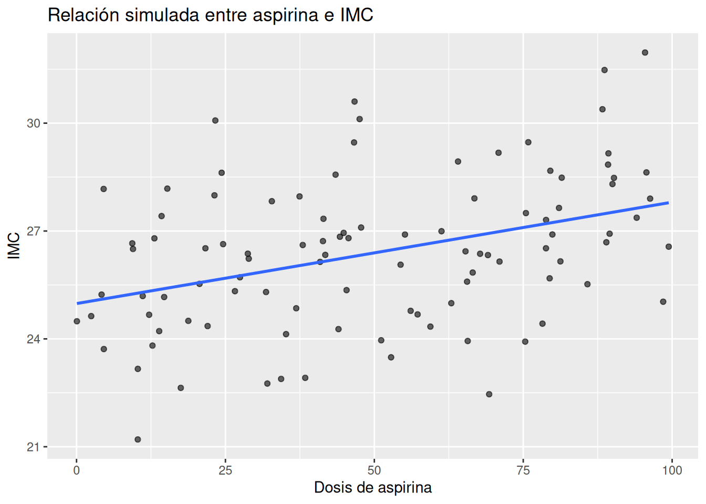
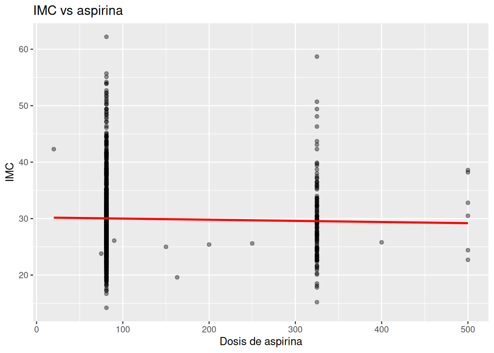
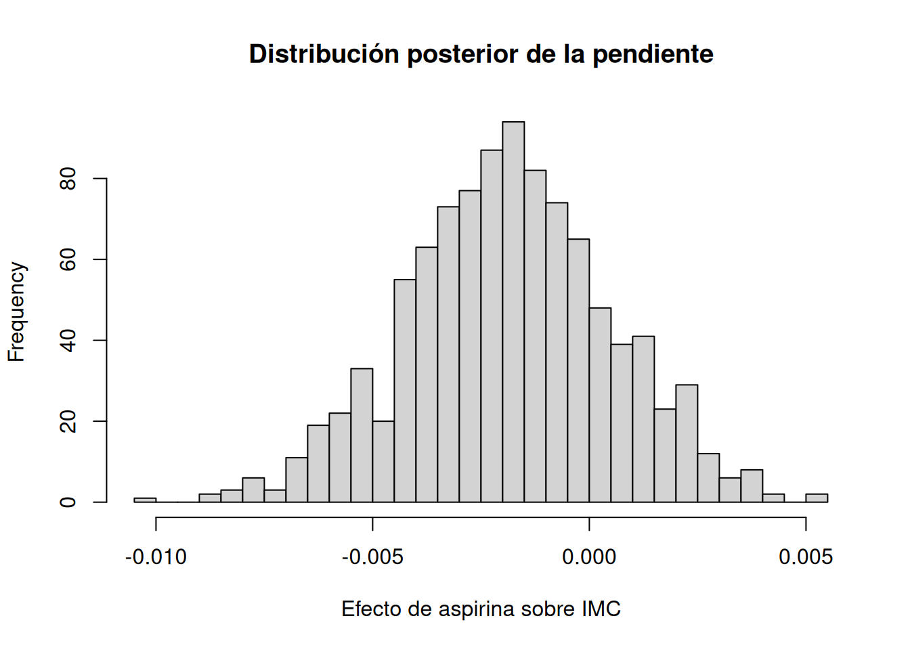
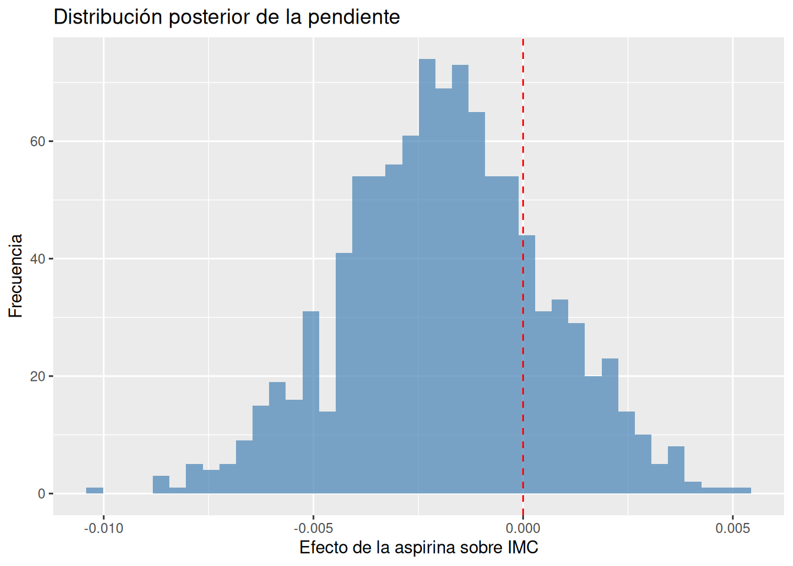

set.seed(123)
# Crear 100 pacientes
n <- 100
# Simular La dosis de aspirina y de índice de masa corporal tomando
# en cuenta la aspirina
datos_sim <- tibble(
aspirina = runif(n, 0, 100),
imc = 25 + 0.03 * aspirina + rnorm(n, 0, 2)
)11.- Primer Modelo Bayesiano en R
1. Intuición (SIN código)
Hasta ahora hemos explorado datos, relaciones y patrones. Pero hay una pregunta clave que aún no hemos respondido:
👉 ¿Cómo pasamos de observar datos a construir un modelo que nos diga algo útil, con incertidumbre incluida?
Aquí es donde entra el modelo bayesiano.
¿Qué es un modelo bayesiano (en lenguaje clínico)?
Un modelo bayesiano es simplemente una forma de responder preguntas como:
"Dado lo que sabemos y lo que vemos en los datos… ¿qué tan probable es esta relación?"
En nuestro caso:
👉 ¿Existe una relación entre el uso de aspirina y el IMC?
Cómo piensa un modelo bayesiano
Imagina que eres médico y tienes una sospecha clínica:
- Sabes que la aspirina suele usarse en personas con:
- mayor riesgo cardiovascular
- inflamación crónica
- Sabes que estas condiciones están relacionadas con:
- obesidad
- grasa visceral
Entonces tu intuición inicial podría ser:
👉 “Tal vez las personas que usan aspirina tienden a tener mayor IMC”
Pero no estás seguro. Y eso es clave.
El enfoque bayesiano
El modelo bayesiano hace exactamente esto:
- Empieza con una idea inicial (prior)
→ “Creo que puede haber una relación, pero no estoy seguro”
- Mira los datos (NHANES)
→ Observa lo que realmente ocurre
- Actualiza tu creencia (posterior)
→ Combina lo que creías + lo que muestran los datos
Modelo más simple posible
Vamos a construir el modelo más básico:
Relacionar una variable con otra
- Variable resultado (Y):
👉 IMC (BMXBMI)
- Variable explicativa (X):
👉 Dosis de aspirina (RXD530)
La idea es:
👉 “¿Cómo cambia el IMC cuando cambia la dosis de aspirina?”
La forma del modelo
En lenguaje simple:
IMC = valor base + efecto de la aspirina + incertidumbre
Esto se suele escribir como:
IMC ~ aspirina
Algo MUY importante
Este modelo NO dice:
❌ “La aspirina causa obesidad”
Sino:
👉 “Existe (o no) una asociación entre ambas variables”
Diferencia clave (muy importante)
En estadística tradicional:
👉 buscas “el número correcto”
En enfoque bayesiano:
👉 obtienes una distribución de posibles valores
Es decir:
- No hay una sola pendiente
- Hay un rango de pendientes plausibles
2. Ejemplo simple (simulación en R)
Antes de usar datos reales, vamos a crear un ejemplo sencillo.
Imaginemos:
- Personas con mayor “exposición” (como aspirina)
- Tienden a tener ligeramente mayor IMC
Simulamos
Visualizamos
# Diagrama de dispersión que relaciona la dosis de aspirina con el
# índice de masa corporal
ggplot(datos_sim, aes(x = aspirina, y = imc)) +
geom_point(alpha = 0.6) +
geom_smooth(method = "lm", se = FALSE) +
labs(
title = "Relación simulada entre aspirina e IMC",
x = "Dosis de aspirina",
y = "IMC"
)
Construimos el modelo bayesiano
# Construir el modelo bayesiano
modelo_sim <- stan_glm(
imc ~ aspirina,
data = datos_sim,
chains = 2,
iter = 1000,
refresh = 0
)Ver resultados
# Ver resultados
print(modelo_sim) # produce:stan_glm
family: gaussian [identity]
formula: imc ~ aspirina
observations: 100
predictors: 2
------
Median MAD_SD
(Intercept) 25.0 0.4
aspirina 0.0 0.0
Auxiliary parameter(s):
Median MAD_SD
sigma 2.0 0.1
------
* For help interpreting the printed output see ?print.stanreg
* For info on the priors used see ?prior_summary.stanregEl modelo en intercept indica que la media de imc base es cerca a 25 cuando la aspirina es cero, con una variabilidad de 0.4; y sigma indica que la variación de la media de imc es de 2 puntos. Los valores de aspirina no indican los miligramos sino la variación del imc en relación a la aspirina (más específicamente a la mediana en la distribución de la aspirina lo que no es cero, pero es un valor cercano a cero)
Intervalos posteriores
# Intervalos posteriores
posterior_interval(modelo_sim) # produce: 5% 95%
(Intercept) 24.38687580 25.60895699
aspirina 0.01717656 0.03956623
sigma 1.71788756 2.22020748Estos intervalos indican que el imc varía de 24.3 a 25.6 y que la variación de imc va de 0.017 puntos de imc (en los que menos aspirina toman) a 0.039 puntos de imc (en los que más aspirina toman).
Interpretación simple
En lugar de decir:
❌ “la pendiente es 0.03”
Decimos:
👉 “La pendiente probablemente está entre 0.017 y 0.039”
Esto significa que por cada aumento de unidad en aspirina: el imc aumenta entre aproximadamente 0.017 y 0.039 puntos (lo que muestra una relación fuerte pero clínicamente insignificante)
3. Ejemplo aplicado con NHANES
Ahora vamos a usar datos reales.
Preparamos los datos
Asumimos que ya tienes el dataset limpio (nhanes).
# Seleccionar sólo las variables que voy a usar
nhanes_modelo <- df_obesidad %>%
select(BMXBMI, RXD530) %>%
drop_na()Exploración rápida
# Filtrar a los que toman sólo hasta 2000 mg de aspirina como dosis
my_nhanes_modelo <- nhanes_modelo %>%
filter(
RXD530 <= 2000
)
# Diagrama de dispersión que relaciona a la dosis de aspirina con
# el índice de masa corporal
ggplot(my_nhanes_modelo, aes(x = RXD530, y = BMXBMI)) +
geom_point(alpha = 0.4) +
geom_smooth(method = "lm", se = FALSE, color = "red") +
labs(
title = "IMC vs aspirina",
x = "Dosis de aspirina",
y = "IMC"
)
Construimos el modelo bayesiano
# Construir el modelo bayesiano
modelo_nhanes <- stan_glm(
BMXBMI ~ RXD530,
data = my_nhanes_modelo,
chains = 2,
iter = 1000,
refresh = 0
)Resumen del modelo
# Resumen del modelo
print(modelo_nhanes) # produce:stan_glm
family: gaussian [identity]
formula: BMXBMI ~ RXD530
observations: 1071
predictors: 2
------
Median MAD_SD
(Intercept) 30.2 0.3
RXD530 0.0 0.0
Auxiliary parameter(s):
Median MAD_SD
sigma 6.8 0.2
------
* For help interpreting the printed output see ?print.stanreg
* For info on the priors used see ?prior_summary.stanregEstos datos indican: en intercept que la mediana del índice de masa corporal es de 30.2 y la mediana de variación de imc en relación con la aspirina es de más o menos cero (con una variabilidad de 0.3 puntos de imc). Además los pacientes varían en 6.8 puntos alrededor del promedio de imc
Intervalos de credibilidad
# Intervalos de credibilidad
posterior_interval(modelo_nhanes) # produce: 5% 95%
(Intercept) 29.654347483 30.740762943
RXD530 -0.005928065 0.002160174
sigma 6.547826892 7.048226197Estos datos indican que la pendiente está entre -0.0059 y 0.0021 lo que significa que por cada aumento de unidad de aspirina el imc cambia entre -0.0059 y 0.0021. Además el imc varía entre 6.5 y 7 puntos alrededor de su promedio
Ver la distribución
# Convertir el modelos en una matriz de simulaciones
# (Extrae todas las simulaciones del modelo y
# convierte el modelo en datos)
posterior <- as.matrix(modelo_nhanes)
# Visualizar con un histograma la distribución posterior de la
# pendiente
hist(posterior[, "RXD530"], breaks = 30,
main = "Distribución posterior de la pendiente",
xlab = "Efecto de aspirina sobre IMC")
Versión con ggplot2
# Convertir la matriz de simulaciones en un dataframe
# moderno tipo tibble. (Hace usables los datos de la
# matriz con tidyverse)
posterior_df <- as_tibble(posterior)
# Versión más clara con ggplot
ggplot(posterior_df, aes(x = RXD530)) +
geom_histogram(bins = 40, fill = "steelblue", alpha = 0.7) +
geom_vline(xintercept = 0, linetype = "dashed", color = "red") +
labs(
title = "Distribución posterior de la pendiente",
x = "Efecto de la aspirina sobre IMC",
y = "Frecuencia"
)
Aquí se ve una curva centrada cerca de cero y distribuida entre algo como -0.005 y 0.002. Hay mucha masa alrededor de cero, la mayoría de valores posibles dicen que no hay un efecto claro o el efecto es muy pequeño. A la izquierda algunos valores dicen ligero efecto negativo y a la derecha dicen ligero efecto positivo.
👉 “la evidencia es compatible con ausencia de efecto”
4. Interpretación clínica
Aquí es donde todo cobra sentido.
¿Qué significa la pendiente?
La pendiente responde:
👉 “¿Cuánto cambia el IMC cuando aumenta la dosis de aspirina?”
Pero ahora en lenguaje bayesiano
No decimos:
❌ “El efecto es 0.02”
Decimos:
👉 “El efecto probablemente está entre 0.00 y 0.05” (ejemplo)
Traducción clínica
Esto puede interpretarse como:
Personas con mayor uso de aspirina
tienden a tener ligeramente mayor IMC
Pero cuidado (esto es clave)
Esto NO significa:
❌ que la aspirina cause obesidad
Más bien:
👉 la aspirina puede ser un marcador clínico
Interpretación más profunda
La aspirina suele usarse en pacientes con:
- inflamación crónica
- riesgo cardiovascular
- síndrome metabólico
Y estos mismos factores están relacionados con:
- obesidad
- grasa visceral
Entonces el modelo nos dice
👉 “Hay evidencia de una asociación entre aspirina e IMC”
Pero la explicación más probable es:
👉 comparten el mismo contexto fisiopatológico
Lo más importante que aprendiste
Este capítulo no es sobre código.
Es sobre cambiar tu forma de pensar:
Antes
- Buscabas un número
- Querías una respuesta exacta
Ahora
- Piensas en rangos plausibles
- Aceptas la incertidumbre
- Interpretas resultados en contexto clínico
Mensaje final
Tu primer modelo bayesiano ya responde una pregunta real:
👉 ¿Cómo se relacionan aspirina e IMC?
Pero más importante aún:
👉 ahora sabes cómo pensar en términos de modelos bayesianos
En el siguiente capítulo vamos a dar un paso más:
👉 entender mejor los priors y cómo influyen en nuestros resultados.
Ejercicios
Ejercicio 1 — Leer el modelo como médico
Sin usar código nuevo, usa tus resultados actuales.
📌 Pregunta:
Responde con tus propias palabras:
- ¿Cuál es el IMC promedio estimado?
- ¿Qué significa la pendiente de RXD530?
- ¿El intervalo de la pendiente incluye 0?
- ¿Qué implica eso clínicamente? 🎯 Objetivo
👉 Aprender a traducir output → lenguaje clínico
Ejercicio 2 — Probabilidad de efecto positivo
Ahora sí, un paso más bayesiano.
📌 Código:
mean(posterior[, "RXD530"] > 0)
📌 Preguntas: 1. ¿Qué valor obtienes? 2. Interprétalo así:
👉 “La probabilidad de que el efecto sea positivo es ___”
- ¿Ese valor es suficiente para decir que hay relación? 🎯 Objetivo
👉 Pensar en términos de probabilidad de hipótesis, no p-values
Ejercicio 3 — Detectar evidencia débil
Observa la distribución posterior (tu gráfico).
📌 Preguntas: 1. ¿La distribución está muy concentrada o muy dispersa? 2. ¿Está claramente a un lado de 0 o centrada en 0? 3. ¿Cómo describirías la evidencia?
Opciones:
- fuerte
- moderada
- débil
- inexistente 🎯 Objetivo
👉 Desarrollar intuición visual bayesiana
Ejercicio 4 — Cambiar la pregunta clínica
Ahora piensa diferente.
En lugar de:
👉 “¿la aspirina afecta el IMC?”
Piensa:
👉 “¿las personas que usan aspirina tienen diferente IMC?”
📌 Tarea
Crea una variable binaria:
bin_nhanes_modelo <- my_nhanes_modelo %>%
mutate(usa_aspirina = if_else(RXD530 <= 100, 1, 0)) %>%
select(BMXBMI, usa_aspirina) %>%
drop_na()📌 Modelo:
modelo_bin <- stan_glm(
BMXBMI ~ usa_aspirina,
data = bin_nhanes_modelo,
chains = 2,
iter = 1000,
refresh = 0
)📌 Preguntas: 1. ¿Cuál es la diferencia de IMC entre los grupos? 2. ¿El intervalo incluye 0? 3. ¿Cambia la interpretación respecto al modelo anterior?
🎯 Objetivo
👉 Entender cómo la formulación del problema cambia el resultado
Ejercicio 5 — Interpretación clínica profunda
Este es el más importante.
📌 Pregunta abierta:
Si encuentras una ligera asociación entre aspirina e IMC:
👉 ¿cuál es la explicación MÁS probable?
Opciones:
A. La aspirina causa obesidad B. La obesidad causa uso de aspirina C. Ambas están relacionadas con inflamación D. Es completamente aleatorio
🎯 Objetivo
👉 Pensar en causalidad vs asociación
Ejercicio 6 — Explica como si enseñaras
Imagina que explicas esto a un colega médico.
📌 Tarea:
Completa:
“Hicimos un modelo bayesiano y encontramos que…”
Incluye:
- efecto
- incertidumbre
- interpretación clínica
🎯 Objetivo
👉 Consolidar conocimiento enseñando
Ejercicio 7
Calcula:
mean(abs(posterior[, "RXD530"]) < 0.001)
📌 Pregunta:
👉 ¿Qué significa ese número?
🎯 Objetivo
👉 Entender “efectos prácticamente nulos”
Ejercicio 8 — Clasificación de evidencia
Para cada intervalo, clasifica:
👉 fuerte / moderada / débil / inexistente
A
0.01 a 0.03
B
-0.002 a 0.04
C
-0.01 a 0.01
D
-0.05 a -0.02
Ejercicio 9 — Pensamiento clínico
Un modelo da:
0.001 a 0.004
Pregunta:
👉 ¿Es clínicamente importante o solo estadísticamente “detectable”?
Ejercicio 10 — Probabilidad
Si obtienes:
mean(posterior[, "RXD530"] > 0) = 0.92
Preguntas:
- ¿Hay evidencia de relación?
- ¿Qué tan fuerte?
- ¿Cómo lo dirías clínicamente?
Ejercicio 11 — Comparación mental
¿Cuál es más convincente?
Modelo A
0.02 a 0.03
Modelo B
0.001 a 0.08
👉 Explica por qué
Ejercicio 12 — Tu caso real
Con tu intervalo:
-0.005 a 0.002
Pregunta:
👉 ¿Qué porcentaje aproximado de la distribución crees que está cerca de 0?
(no exacto, solo intuición)